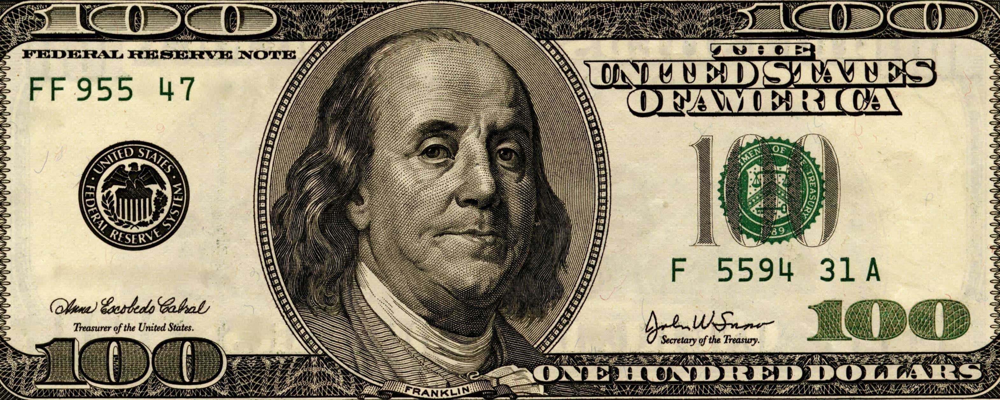
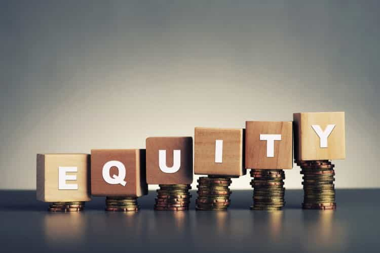

Kyle is an entrepreneur and nomad who has been living abroad since 2016. He blogs at This Is Trouble. Follow him on Facebook.


The following article was sponsored by Pro Niche Site.
Sometimes, it’s the simple things that can have great returns. In 2017, we have informational overload. As a result, there is a high demand for good information out there.
There is a stupid amount of money in telling other people what you think about a product. If you’ve ever looked at the price of buying ads on keywords, you’ll take note that certain keywords are much more expensive than others.
For example, keywords that have “buy steroids” or “steroids review” tend to be a lot more expensive than “how to take steroids”.
Generally speaking, there is a funnel that people go through before they actually purchase something. Using our steroid example, it would look something like this (as far as keywords):
The beauty is that there is usually an opportunity to make a sale somewhere on that path. Somewhere that, if you know how to write, how to do your research, and generally have some business sense—you can make excellent profits.
Many of you who have read my work on this site for the last 3+ years have likely seen some of my contextual links to my “niche websites” such as Ukraine Living, Eastern European Travel and Speaking Abroad. My goal isn’t to convert an ROK reader (i.e. you) into buying a product on those sites—it’s to improve the ranking of the site so that someone else finds me somewhere on that funnel of keywords.
When I quit my corporate job back in February of 2016, my main blog was fledgling to say the least. And I had my first course in the works, and was hoping that it would ultimately be able to support me. It was a gamble, that thankfully paid off. I did commit to posting on my main site at least daily for the first year. I mostly achieved this.
But there is only so much growth you can force (I wasn’t going to post 3 times a day)—some of it has to take time to happen organically. So I decided to spin up a few other sites in the spare time I had. I wrote some of the articles myself, hired out some others, and generally took them on as fun “hobby sites”.
Well, in June alone Ukraine Living cleared over $600 in revenue. A fitness/supplement site that I started in early January will clear $500. Eastern European Travel will make $100. Speaking Abroad is new and is a little slow off the line.
Is this big money? Absolutely not.
But at the same time, the amount of work I have put into either of these sites is barely 50 hours (each). And when they consistently make numbers like that, you can often sell them outright for 15-20 times the monthly revenue.
I have firmly shifted my belief that starting off with a small, low-investment website is one of the best ways to make your first foray into “passive” income (I hate that term). No matter what way you spin it, internet business is always going to take trial and error.
My aim is to remove as much of that process as possible and to send people the right way. Here are a few reasons why niche sites are an excellent way to get started in online business.

If you already have a web host, you’re already set. Most plans allow you to host unlimited websites free of charge. If this is the case, your only additional investment is the new domain name.
If you don’t have this, your out-of-pocket costs (other than your time, obviously) is going to be about $100-150.
I mean, what other business can you start for $150 or less? There’s not many out there.
If you choose to take on a project like this, there are so many skills that are applicable to multiple online businesses. Or hell, you could even use these types of skills to get a corporate job in certain sectors.
Here are just a few of the skills you easily develop:

As I mentioned earlier, if you have a website that can consistently make $500 a month, you can reasonably sell that on a site like Empire Flippers or Flippa for 20 or so times those earnings. That’s potentially a $10,000 payday if you’re willing to let that income source go.
The internet moves quickly, and things go out of style quickly. While content websites are by far the slowest way to make money off the bat, it’s one of the few ones that builds equity in something.
Many people have asked why I haven’t gotten into higher-end affiliate marketing—pushing thousands of visitors to signup pages and making money off each conversion. The answer I give is: because at this point in my life, I feel more comfortable with building pillars of support that I know aren’t going to disappear. Things that I can leave for a few weeks, and trust that they will still be making money.
Eventually, there will be a point in my life where tackling those bigger ticket challenges will come about. But the first year of quitting my job, moving abroad, and trying to scale a business was not that time. I had another friend who moved with me and attempted to learn to day trade as he was running out of money. Take a wager how that turned out.
The internet is continuing to grow, and more people are coming online every day. This kind of business isn’t going anywhere, because people are always going to be searching out information.
So if you want to pursue a niche website, how do you start? Well, find a passion in a niche—then within a subniche.
For example, the “fitness” niche is a poor choice. Good luck competing with Men’s Health, BodyBuilding.com, etc. But what’s within the fitness niche?
It doesn’t have to be difficult, but there is a lot of information out there—and that’s why I created a 6-part FREE video series that helps pick these topics out, and get started.
You can get access to all 6 videos here.
PS: Beyond the free workshop, the full Pro Niche Site course (including 12 weeks of 1-on-1 coaching, Kratom not included) has launched this week, and is available at it’s lowest price until this Sunday night at 11:59pm EST. Click here to learn more.